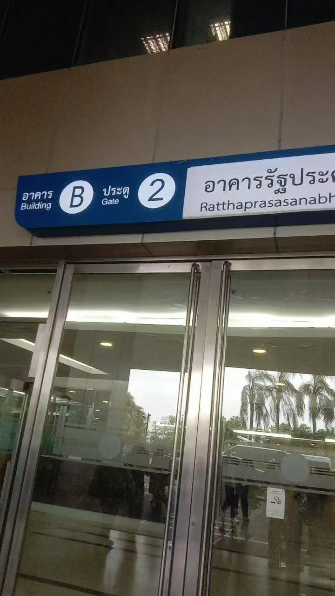
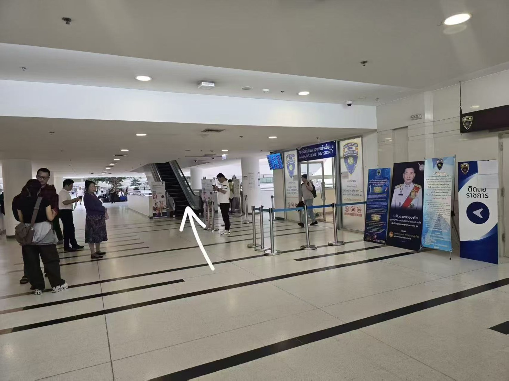
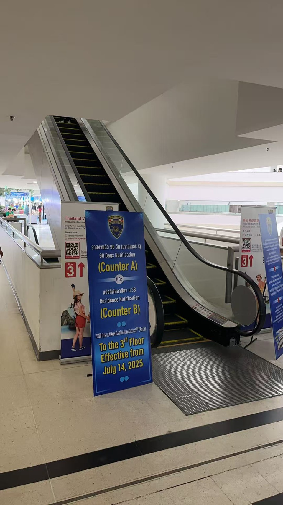
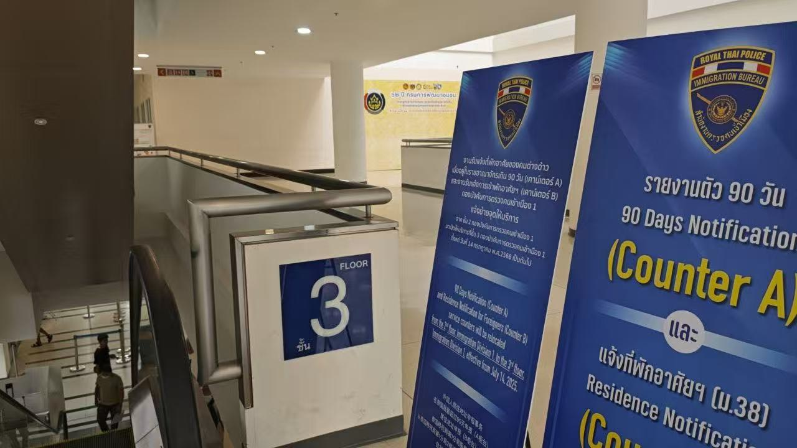

Ratthaprasasanabhakti Building (Building B), Chaeng Watthana, Gate 2
อาคารรัฐประศาสนภักดี (อาคาร บี) ศูนย์ราชการ แจ้งวัฒนะ ประตู 2
TH ถึงทางเข้าประตู 2 ชั้น 2 อาคารรัฐประศาสนภักดี (อาคาร บี)
EN Ratthaprasasanabhakti Building B, Gate 2, Floor 2 Entrance.
CN 到达市政综合体 B 栋 2 号门 2 楼入口。

TH เดินตรงเข้ามาด้านในอาคารอย่างต่อเนื่อง ตามภาพ
EN Pass through the gate and continue straight ahead inside as shown.
CN 通过入口后，按照图示继续向前直行。

TH เจอแล้วขึ้นบันไดเลื่อนไป 1 ชั้น
EN Find and take the escalator up one floor to the 3rd Floor.
CN 找到并乘坐自动扶梯前往 3 楼。

TH ถึงชั้น 3 แล้ว ให้ถ่ายรูป selfie มาเพื่อรอพนักงานมารับ
EN Arrive at Floor 3, please take a selfie for our staff to identify and pick you up.
CN 抵达 3 楼后，请自拍以供我们的工作人员识别并接待您。

📢 IMPORTANT / 重要提示 / ข้อมูลสำคัญ: